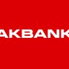
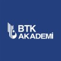
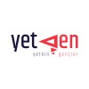
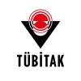
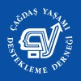
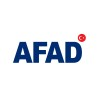

Claude Academy: Model Context Protocol: Advanced Topics
Advanced MCP topics.
Credential ID: 23c55c1b89fdc5ebeeaf00c9b1493889LICENSES & CERTIFICATIONS
AI, LLM, proje yönetimi, veri bilimi, siber güvenlik, girişimcilik ve gönüllülük eğitimlerini tek yerde topluyorum. Tekrarlı LinkedIn kayıtlarını sitede tekilleştirdim.
2026 Eylül’de alınan Claude, MCP, Claude Code, Claude API, AI Fluency ve enterprise rollout sertifikaları.
Advanced MCP topics.
Credential ID: 23c55c1b89fdc5ebeeaf00c9b1493889MCP temelleri ve araç/bağlam mimarisi.
Credential ID: 4155fff6ce9d66c58744a1832f363cc4Claude Cowork kullanım senaryoları.
Credential ID: 077c41d7deb366274a8f2866f80bda10Enterprise rollout kararları ve güvenli dağıtım yaklaşımı.
Credential ID: 7fac0910a30bdeeb02260fc446f926dbClaude modellerini Vertex AI üzerinde kullanma.
Credential ID: c250e09465f6406b2e44385ed1ad3e4fClaude modellerini Amazon Bedrock üzerinde kullanma.
Credential ID: db5259f94c29a7679d444a92554a4db7Claude platform temelleri.
Credential ID: 240ea02a15b1dc58009a13f03fb39974Claude Code ile gerçek geliştirme akışları.
Credential ID: 3d75bdb2c70d11065c7d2b4952d527daClaude Code başlangıç eğitimi.
Credential ID: 3d245c6e4964d3348779336e3e066a2aClaude kullanım ve yeteneklerine giriş.
Credential ID: 7917f6edd3b84ef497f1809d356ecf4eClaude API ile uygulama geliştirme.
Credential ID: 308cc1626860165a15c9a2602be19edbİnsan-ajan takım tasarımı ve iş akışları.
Credential ID: aa911d07b88161e3329d46ac62086ec5AI fluency çerçevesi ve temel kavramlar.
Credential ID: db0d6f886c6c8facb44685db451047b5AI ürün ve sistem geliştiricileri için akıcılık.
Credential ID: b630c3aa570c7c1beed0dc1508d104e8AI sistemlerinin yetenekleri ve sınırları.
Credential ID: 6924a4bb3dfdefa241890decc28d52fdSmall Businesses, pK-12 Educators, Nonprofits, Educators, Students ve Creative Work rozetleri.
IDs: e079d68c..., 379bf13c..., 999255..., 4e2f70..., dfa9f3..., baf39...Yapay zeka, makine öğrenmesi, derin öğrenme ve bilimsel araştırma odaklı sertifikalar.
Uzay biyolojisi araştırmalarında AI/ML kullanımı. Skills: Programlama.

Akbank · Oct 2025Deep Learning, LLM ve multimodal chest X-ray disease detection projesi; CNN, medical language models ve Grad-CAM explainability.
Yapay zeka ve teknoloji akademisi mezuniyeti. Skills: Programlama.
Akademi bootcamp katılım belgesi ve proje geliştirme süreci.
Yapay Zeka ve Teknoloji Akademisi kapsamında 02–06 Mayıs 2025 hackathon etkinliği; ürün geliştirme, takım çalışması, Python ve project management.
Yapay zeka ve inovasyon odağında problem çözme, yaratıcı düşünme ve teknoloji odaklı çözüm geliştirme.
Machine learning ve Python odaklı Coursera sertifikası.
Credential: UIV3G8AAF4JX
BTK Akademi · Jun 2024AI temel kavramları, makine öğrenimi, NLP, veri analizi ve algoritma tabanlı problem çözme.
Makine öğrenmesi, derin öğrenme, doğal dil işleme, görüntü işleme ve veri analizi temelleri.
Yapay zeka temelleri, makine öğrenmesi ve derin öğrenme giriş eğitimi.
Proje yönetimi, liderlik, girişimcilik, mentorluk ve kariyer gelişimi sertifikaları.

Yetkin Gençler · Apr 202545 saatlik Dijital Çağda Yetkinlik ve Beceri Geliştirme Programı’nı lider olarak tamamlama; atölye kolaylaştırıcılığı, ekip yönetimi ve iletişim.
Mentorink başarı sertifikaları. LinkedIn’de birden fazla kayıt bulunduğu için tek kartta toplandı.
Proje başlatma ve başarılı proje planlama temelleri.
Credential ID: 3MNA3WWY0UVJProje planlama ve proje yönetimi temelleri.
Credential ID: MM4QE9C6NROPVeri bilimi temelleri.
Credential ID: ZAGZW40WXC7LGE Vernova Türkiye Kadın Ağı ve ÇYDD iş birliğiyle “Kariyerime İlk Adım” programı; yenilenebilir enerji, proje yönetimi ve kariyer gelişimi.

TÜBİTAK · Oct 2023Lisans öğrencileri için proje yazma, proje yönetimi ve programlama odaklı eğitim.
Ürün geliştirme, proje yönetimi ve yetkinlik gelişimi programı.
Ürün geliştirme, proje yönetimi, metaverse ve RPA dahil teknoloji vizyon eğitimleri.
Credential IDs include: 99550365092970, 04195082493684Teknoloji, inovasyon, VR/AR, ürün geliştirme ve proje yönetimi.
Credential ID: 99550365092970 / 04195082493684Yazılım geliştirme, siber güvenlik, OOP, MATLAB ve zirve/atölye katılımları.
Web uygulamaları geliştirme eğitimi.
Girişimcilik ve teknoloji tabanlı ürün geliştirme eğitimleri.
Siber güvenlik temelleri ve programlama.
Sınıflar, nesneler, kalıtım, çok biçimlilik, kapsülleme ve gerçek dünya senaryolarında OOP uygulamaları.
MATLAB workshop katılımı.
Yapay zeka zirvesi katılım sertifikası.
Siber güvenlik ve teknik farkındalık odaklı sertifika kayıtları.
Veri bilimi zirvesi katılımı.
Credential ID: 72492736201356Mentorluk, afet, sosyal etki ve toplum destekli eğitim kayıtları.

Çağdaş Yaşamı Destekleme Derneği · Jun 2025Lüleburgaz menti katılım belgesi ve mentorluk süreci.
Mentörlük projesi katılım belgesi.

AFAD · Mar/Apr 2023Afet ve acil durum farkındalığı/proje yönetimi/programlama becerileriyle ilişkilendirilen birden fazla AFAD kaydı.
IDs include: 552b2156850654, b4cec58850654, 81049a066b57af7d20784daed1d33653Proje yönetimi, programlama ve ürün geliştirme odaklı çoklu sertifika kayıtları tek kartta toplandı.